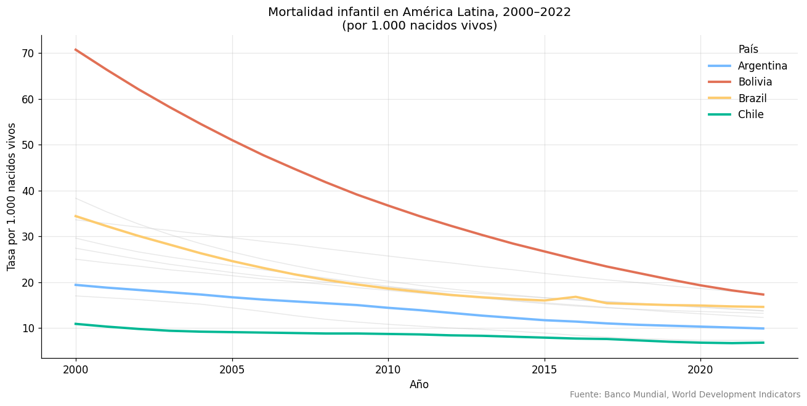

Clase 10 — APIs, datos abiertos y proyecto final#
Python y Políticas Públicas
Contenidos#
¿Qué es una API REST?
Consumir APIs con
requestsAPI de datos.gob.ar
API del Banco Mundial
Estructura del proyecto final: el policy brief con datos
Checklist de entrega
Taller: presentación de avances
1. ¿Qué es una API REST?#
Una API (Application Programming Interface) es una interfaz que permite que dos programas se comuniquen. Una API REST usa el protocolo HTTP y devuelve datos generalmente en formato JSON.
¿Por qué es importante para políticas públicas?
En lugar de descargar manualmente archivos de un portal, podemos:
Acceder a datos actualizados automáticamente
Filtrar y pedir solo los datos que necesitamos
Combinar datos de múltiples fuentes en un script
Cómo funciona una request HTTP básica:
Mi script Servidor de datos
│ │
│── GET /api/datos?año=2023 ──► │
│ │
│◄── JSON con los datos ────────│
Códigos de respuesta HTTP:
200 OK: todo bien, datos recibidos404 Not Found: el endpoint no existe429 Too Many Requests: excediste el límite de requests500 Internal Server Error: error del servidor
2. Consumir APIs con requests#
import requests
import pandas as pd
import numpy as np
import matplotlib.pyplot as plt
import json
%matplotlib inline
pd.set_option('display.max_columns', None)
import matplotlib as mpl
import matplotlib.pyplot as plt
# --- Paleta de identidad del curso ---
C = ['#2A6496', '#E07B3F', '#3D9970', '#8E5EA2', '#C0A830', '#637A8A']
mpl.rcParams.update({
'figure.figsize' : (10, 5),
'font.size' : 11,
'axes.titlesize' : 12,
'axes.titleweight' : 'normal',
'axes.spines.top' : False,
'axes.spines.right' : False,
'legend.frameon' : False,
'axes.prop_cycle' : mpl.cycler(color=C),
'figure.dpi' : 110,
})
def tit(ax, t, **kw):
"""Título sin negrita, alineado a la izquierda."""
ax.set_title(t, loc='left', fontweight='normal', **kw)
# Ejemplo básico: consultar una API pública
# Usamos la API de tipo de cambio del BCRA (Banco Central)
def get_api(url, params=None, timeout=10):
"""Wrapper seguro para requests con manejo de errores."""
try:
resp = requests.get(url, params=params, timeout=timeout)
resp.raise_for_status() # lanza excepción si status != 200
return resp.json()
except requests.exceptions.Timeout:
print("Error: la request tardó demasiado")
except requests.exceptions.HTTPError as e:
print(f"Error HTTP: {e}")
except requests.exceptions.ConnectionError:
print("Error: sin conexión a internet")
except json.JSONDecodeError:
print("Error: la respuesta no es JSON válido")
return None
# Test: API pública de ejemplo
datos = get_api("https://jsonplaceholder.typicode.com/posts/1")
if datos:
print(json.dumps(datos, indent=2))
{
"userId": 1,
"id": 1,
"title": "sunt aut facere repellat provident occaecati excepturi optio reprehenderit",
"body": "quia et suscipit\nsuscipit recusandae consequuntur expedita et cum\nreprehenderit molestiae ut ut quas totam\nnostrum rerum est autem sunt rem eveniet architecto"
}
3. API de datos.gob.ar#
El portal de datos abiertos del gobierno argentino (datos.gob.ar) expone una API basada en CKAN (el mismo estándar que usan muchos portales de datos del mundo).
# API de datos.gob.ar: buscar datasets
BASE_URL = "https://datos.gob.ar/api/3/action"
# Buscar datasets sobre educación
resultado = get_api(f"{BASE_URL}/package_search", params={
'q': 'educacion',
'rows': 5,
})
if resultado and resultado.get('success'):
total = resultado['result']['count']
print(f"Datasets encontrados: {total}")
print("\nPrimeros 5 resultados:")
for ds in resultado['result']['results']:
print(f" - {ds['title']} ({ds.get('organization', {}).get('title', 'N/A')})")
else:
print("No se pudo conectar con datos.gob.ar (puede requerir conexión a internet)")
print("\nEjemplo de lo que devuelve la API:")
ejemplo = {"success": True, "result": {"count": 124, "results": [{"title": "Matrícula escolar por nivel", "organization": {"title": "Ministerio de Educación"}}]}}
print(json.dumps(ejemplo, indent=2, ensure_ascii=False))
Datasets encontrados: 38
Primeros 5 resultados:
- Educación ambiental (Subsecretaría de Ambiente)
- Sistema sociodemográfico - Educación (Secretaría de Obras Públicas)
- Asentamientos humanos, sistemas de ciudades e infraestructuras - Equipamiento educativo (Secretaría de Obras Públicas)
- Programa de Investigación y Desarrollo para la Defensa (PIDDEF) ( Ministerio de Defensa)
- Ley de educación ambiental integral (Subsecretaría de Ambiente)
# Descargar un CSV directamente desde datos.gob.ar
# Los archivos CSV se pueden leer directamente desde su URL
# Ejemplo: estadísticas vitales del Ministerio de Salud
# url_csv = "https://datos.gob.ar/dataset/.../archivo.csv"
# df = pd.read_csv(url_csv, encoding='latin1')
# Para encontrar la URL de un CSV:
# 1. Ir a datos.gob.ar
# 2. Buscar el dataset
# 3. Hacer clic en "Acceder" → clic derecho en "Descargar" → Copiar URL
# O usando la API para obtener la URL del recurso:
def get_url_recurso(package_id, resource_format='CSV'):
"""Obtiene la URL del primer recurso CSV de un dataset."""
datos = get_api(f"{BASE_URL}/package_show", params={'id': package_id})
if datos and datos.get('success'):
for recurso in datos['result'].get('resources', []):
if recurso.get('format', '').upper() == resource_format:
return recurso['url']
return None
print("Función get_url_recurso() definida.")
print("Uso: url = get_url_recurso('id-del-dataset')")
print(" df = pd.read_csv(url, encoding='latin1')")
Función get_url_recurso() definida.
Uso: url = get_url_recurso('id-del-dataset')
df = pd.read_csv(url, encoding='latin1')
4. API del Banco Mundial#
La API del Banco Mundial es muy cómoda para datos internacionales comparables. Documentación: https://datahelpdesk.worldbank.org/knowledgebase/articles/898590
def get_wb_indicator(indicador, paises, anio_inicio, anio_fin):
"""
Descarga datos de un indicador del Banco Mundial.
Indicadores útiles:
SI.POV.NAHC → Tasa de pobreza nacional
SL.UEM.TOTL.ZS → Desempleo (%)
SE.ADT.LITR.ZS → Tasa de alfabetización
SH.DYN.MORT → Mortalidad infantil (por 1.000 nacidos vivos)
NY.GDP.PCAP.CD → PIB per cápita (USD corrientes)
"""
paises_str = ';'.join(paises)
url = f"https://api.worldbank.org/v2/country/{paises_str}/indicator/{indicador}"
params = {
'format': 'json',
'date': f'{anio_inicio}:{anio_fin}',
'per_page': 1000
}
datos = get_api(url, params=params)
if not datos or len(datos) < 2:
return None
registros = [
{
'pais': r['country']['value'],
'codigo_pais': r['countryiso3code'],
'anio': int(r['date']),
'valor': r['value']
}
for r in datos[1]
if r['value'] is not None
]
return pd.DataFrame(registros)
# Descargar mortalidad infantil para países de América Latina
paises_latam = ['ARG', 'BRA', 'CHL', 'MEX', 'COL', 'URY', 'PER', 'BOL', 'PRY', 'ECU']
df_mort = get_wb_indicator('SH.DYN.MORT', paises_latam, 2000, 2022)
if df_mort is not None:
print(f"Datos descargados: {df_mort.shape[0]} registros")
print(df_mort.head(10))
else:
print("Sin conexión. Generando datos simulados equivalentes...")
np.random.seed(1)
anios = list(range(2000, 2023))
filas = []
paises_sim = ['Argentina', 'Brazil', 'Chile', 'Mexico', 'Colombia',
'Uruguay', 'Peru', 'Bolivia', 'Paraguay', 'Ecuador']
tasa_base = [14, 18, 8, 15, 17, 10, 22, 45, 28, 20]
for pais, base in zip(paises_sim, tasa_base):
for i, anio in enumerate(anios):
filas.append({'pais': pais, 'anio': anio,
'valor': max(2, base - i * 0.6 + np.random.normal(0, 0.5))})
df_mort = pd.DataFrame(filas)
print(df_mort.head(10))
Datos descargados: 230 registros
pais codigo_pais anio valor
0 Argentina ARG 2022 9.9
1 Argentina ARG 2021 10.1
2 Argentina ARG 2020 10.3
3 Argentina ARG 2019 10.5
4 Argentina ARG 2018 10.7
5 Argentina ARG 2017 11.0
6 Argentina ARG 2016 11.4
7 Argentina ARG 2015 11.7
8 Argentina ARG 2014 12.2
9 Argentina ARG 2013 12.7
# Visualizar la evolución
if df_mort is not None:
fig, ax = plt.subplots(figsize=(12, 6))
paises_destacar = ['Argentina', 'Chile', 'Bolivia', 'Brazil']
colores = {'Argentina': '#74b9ff', 'Chile': '#00b894', 'Bolivia': '#e17055', 'Brazil': '#fdcb6e'}
for pais, grupo in df_mort.groupby('pais'):
serie = grupo.sort_values('anio')
if pais in paises_destacar:
ax.plot(serie['anio'], serie['valor'],
linewidth=2.5, color=colores[pais], label=pais, zorder=3)
else:
ax.plot(serie['anio'], serie['valor'],
linewidth=1, color='lightgray', alpha=0.5, zorder=1)
ax.set_title("Mortalidad infantil en América Latina, 2000–2022\n(por 1.000 nacidos vivos)",
fontsize=13)
ax.set_xlabel("Año")
ax.set_ylabel("Tasa por 1.000 nacidos vivos")
ax.legend(title='País', frameon=False)
ax.grid(alpha=0.3)
ax.spines['top'].set_visible(False)
ax.spines['right'].set_visible(False)
fig.text(0.99, 0.01, "Fuente: Banco Mundial, World Development Indicators",
ha='right', fontsize=9, color='gray')
plt.tight_layout()
plt.savefig("mortalidad_infantil_latam.png", dpi=150, bbox_inches='tight')
plt.show()

5. Estructura del proyecto final: el policy brief con datos#
¿Qué es un policy brief?#
Un policy brief es un documento corto (2–4 páginas) dirigido a tomadores de decisión. Su objetivo es presentar evidencia sobre un problema de política pública y recomendar acciones.
Estructura recomendada#
1. Título y resumen ejecutivo (max. 150 palabras)
¿Cuál es el problema?
¿Qué encontramos?
¿Qué recomendamos?
2. Descripción del problema (½ página)
Contexto y relevancia
Estadísticas descriptivas clave
3. Análisis de datos (1–1.5 páginas)
2–3 visualizaciones bien elegidas
Tabla de estadísticas descriptivas
Si aplica: correlaciones o regresión
4. Hallazgos principales (½ página)
Bullet points con los resultados más importantes
Comparaciones relevantes (entre regiones, en el tiempo, con otros países)
5. Recomendaciones (½ página)
2–3 recomendaciones concretas, respaldadas por la evidencia
6. Fuentes y metodología (al pie)
Origen de los datos
Notebook con el código (adjunto)
Entregables del proyecto final#
Documento policy brief (PDF, 2–4 páginas)
Jupyter Notebook con todo el análisis reproducible
Presentación de 5 minutos al cierre del curso
# Plantilla de notebook para el proyecto final
# Estructura sugerida para tu notebook de proyecto
print("""
=====================================
PLANTILLA: PROYECTO FINAL
Python y Políticas Públicas
=====================================
# [Título del policy brief]
# Autor/a: [nombre]
# Fecha: [fecha]
## 0. Configuración
- Importaciones
- Parámetros globales (fuente de datos, año, colores)
## 1. Carga y limpieza de datos
- Fuente primaria de datos
- Pipeline de limpieza
- Dataset final listo para analizar
## 2. Análisis exploratorio
- Estadísticas descriptivas
- Distribuciones
- Tendencias temporales (si aplica)
## 3. Análisis principal
- Correlaciones / comparaciones / regresión
- Resultados clave
## 4. Visualizaciones para el brief
- 2-3 gráficos de publicación (alta resolución)
- Guardar como PNG/SVG
## 5. Conclusiones
- Hallazgos principales
- Limitaciones del análisis
""")
=====================================
PLANTILLA: PROYECTO FINAL
Python y Políticas Públicas
=====================================
# [Título del policy brief]
# Autor/a: [nombre]
# Fecha: [fecha]
## 0. Configuración
- Importaciones
- Parámetros globales (fuente de datos, año, colores)
## 1. Carga y limpieza de datos
- Fuente primaria de datos
- Pipeline de limpieza
- Dataset final listo para analizar
## 2. Análisis exploratorio
- Estadísticas descriptivas
- Distribuciones
- Tendencias temporales (si aplica)
## 3. Análisis principal
- Correlaciones / comparaciones / regresión
- Resultados clave
## 4. Visualizaciones para el brief
- 2-3 gráficos de publicación (alta resolución)
- Guardar como PNG/SVG
## 5. Conclusiones
- Hallazgos principales
- Limitaciones del análisis
6. Checklist de entrega#
Antes de entregar el proyecto, verificar:
Datos y fuentes#
Los datos provienen de fuentes confiables y están citados
El dataset está disponible públicamente o adjunto
El período y cobertura geográfica están claramente especificados
Análisis#
El notebook corre de principio a fin sin errores (Kernel → Restart & Run All)
La limpieza de datos está documentada (pipeline con log)
Las estadísticas descriptivas incluyen al menos: media, mediana, desvío, min, max
Hay al menos una visualización y una tabla de resultados
Visualizaciones#
Todos los gráficos tienen título descriptivo
Los ejes están etiquetados con unidades
Se indica la fuente de los datos
Los gráficos tienen buena resolución (dpi=150 o mayor)
Policy brief#
Hay un resumen ejecutivo (≤150 palabras)
Los hallazgos están respaldados por los datos
Las recomendaciones son concretas y factibles
El documento tiene entre 2 y 4 páginas
Código#
El código está organizado y es legible
Las variables tienen nombres descriptivos
No hay código redundante o comentado sin propósito
7. Ideas de temas para el proyecto final#
Si no tenés un tema definido, aquí van algunas ideas con fuentes de datos disponibles:
Tema |
Variable dependiente |
Fuentes sugeridas |
|---|---|---|
Pobreza y educación en Argentina |
Tasa de pobreza |
INDEC EPH, datos.gob.ar |
Cobertura de salud por provincia |
Mortalidad infantil / cobertura de obra social |
DEIS-MSAL, INDEC |
Desempleo y género |
Brecha de empleo por género |
INDEC EPH |
Evolución del gasto social |
Ejecución presupuestaria |
Ministerio de Economía |
Acceso a agua potable y saneamiento |
% hogares con acceso |
Censos INDEC |
Comparación de indicadores en LATAM |
Cualquier indicador |
Banco Mundial, CEPAL |
Matrícula escolar por nivel |
Abandono escolar / cobertura |
MINEDU, datos.gob.ar |
Contrataciones y licitaciones públicas |
Montos, proveedores |
Contrataciones Transparentes |
Consejo: elegí un tema que te apasione y para el que encuentres datos fácilmente. Un buen análisis de un tema simple vale más que un análisis confuso de un tema complejo.
# ===== EJEMPLO MÍNIMO COMPLETO =====
# Análisis de mortalidad infantil en América Latina
# El df_mort ya fue cargado (o simulado) más arriba en esta clase
if df_mort is not None:
print("=" * 55)
print("RESUMEN EJECUTIVO")
print("=" * 55)
ultimo_anio = df_mort['anio'].max()
ultimos = df_mort[df_mort['anio'] == ultimo_anio]
print(f"\nAño de análisis: {ultimo_anio}")
print(f"\nTasas de mortalidad infantil por país ({ultimo_anio}):")
print(ultimos.sort_values('valor')[['pais', 'valor']].to_string(index=False))
# Calcular reducción desde 2000
primer_anio = df_mort['anio'].min()
primeros = df_mort[df_mort['anio'] == primer_anio][['pais', 'valor']].rename(columns={'valor': 'valor_inicial'})
resumen = ultimos[['pais', 'valor']].merge(primeros, on='pais')
resumen['reduccion_pct'] = ((resumen['valor_inicial'] - resumen['valor']) / resumen['valor_inicial'] * 100).round(1)
print(f"\nReducción promedio desde {primer_anio}: {resumen['reduccion_pct'].mean():.1f}%")
print(f"Mayor reducción: {resumen.loc[resumen['reduccion_pct'].idxmax(), 'pais']} ({resumen['reduccion_pct'].max():.1f}%)")
print(f"Menor reducción: {resumen.loc[resumen['reduccion_pct'].idxmin(), 'pais']} ({resumen['reduccion_pct'].min():.1f}%)")
=======================================================
RESUMEN EJECUTIVO
=======================================================
Año de análisis: 2022
Tasas de mortalidad infantil por país (2022):
pais valor
Chile 6.8
Uruguay 7.3
Argentina 9.9
Colombia 12.3
Ecuador 13.2
Peru 13.7
Mexico 13.8
Brazil 14.6
Bolivia 17.3
Paraguay 17.5
Reducción promedio desde 2000: 54.5%
Mayor reducción: Bolivia (75.5%)
Menor reducción: Chile (37.6%)